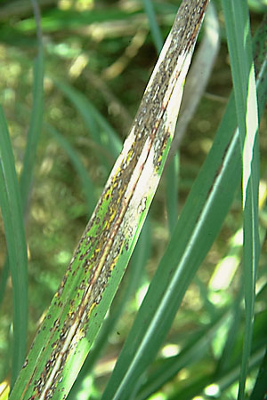

SUGARCANE :: MINOR DISEASE :: RING SPOT
Ring spot –Leptosphaeria sacchari
The water soaked spots appear on leaves and turns to straw colour later surrounded by a thin reddish brown band and a diffused discolouration zone.
|  |
|
||
SUGARCANE :: MINOR DISEASE :: RING SPOT
Ring spot –Leptosphaeria sacchari
|
||